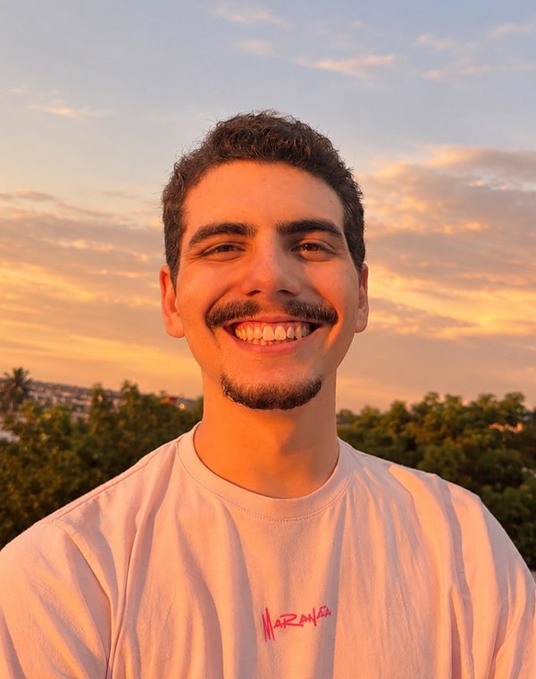
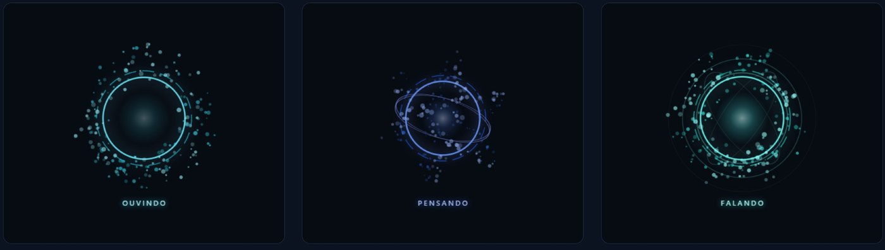
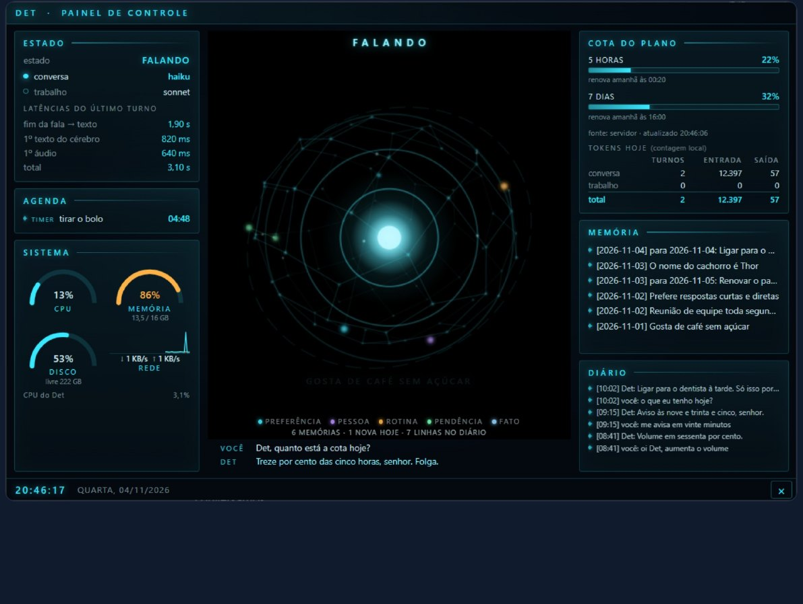
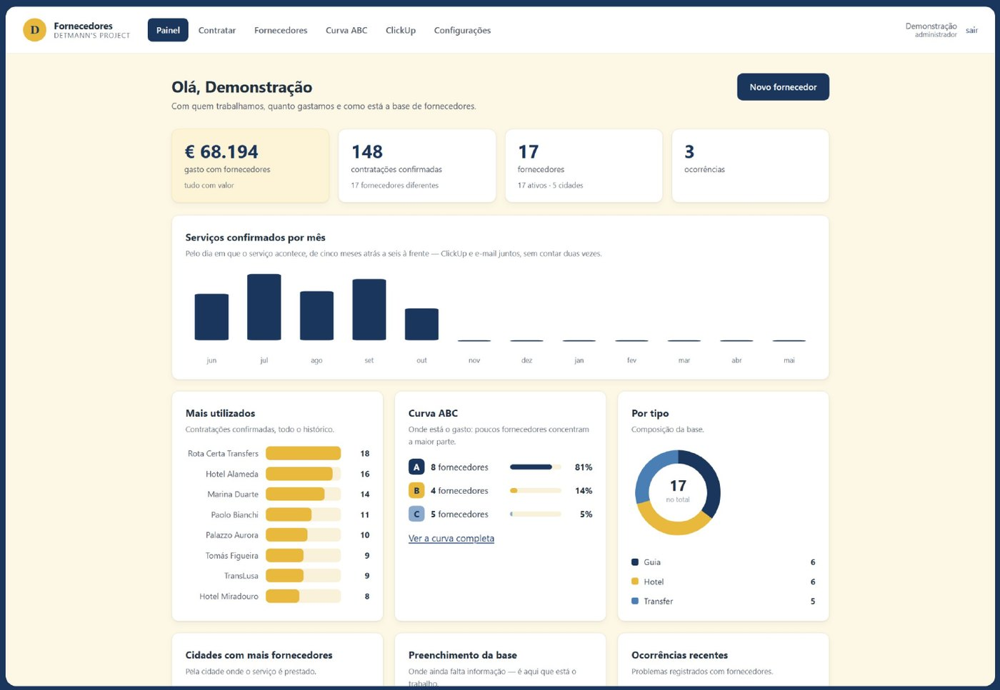
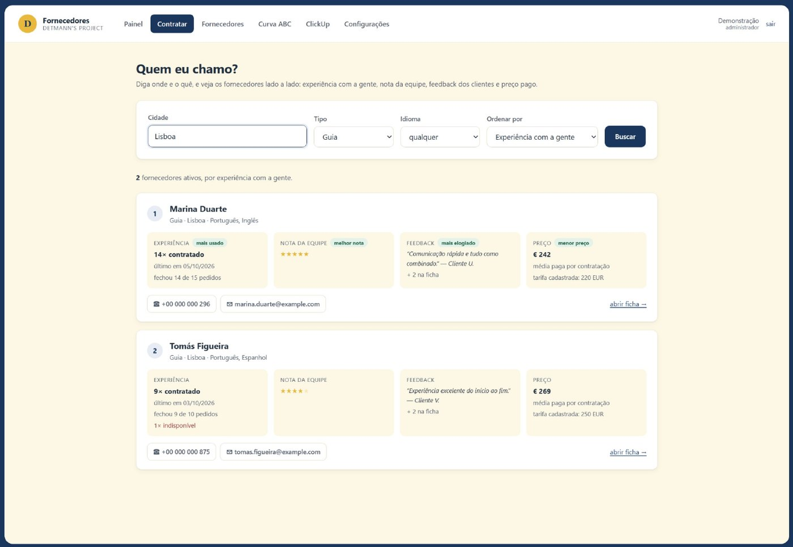
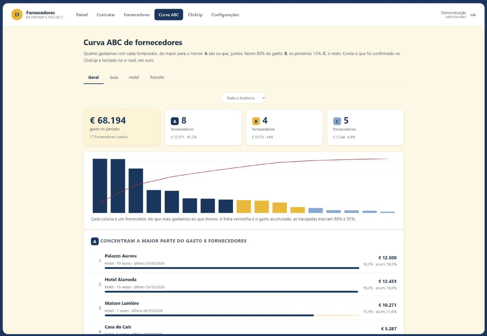
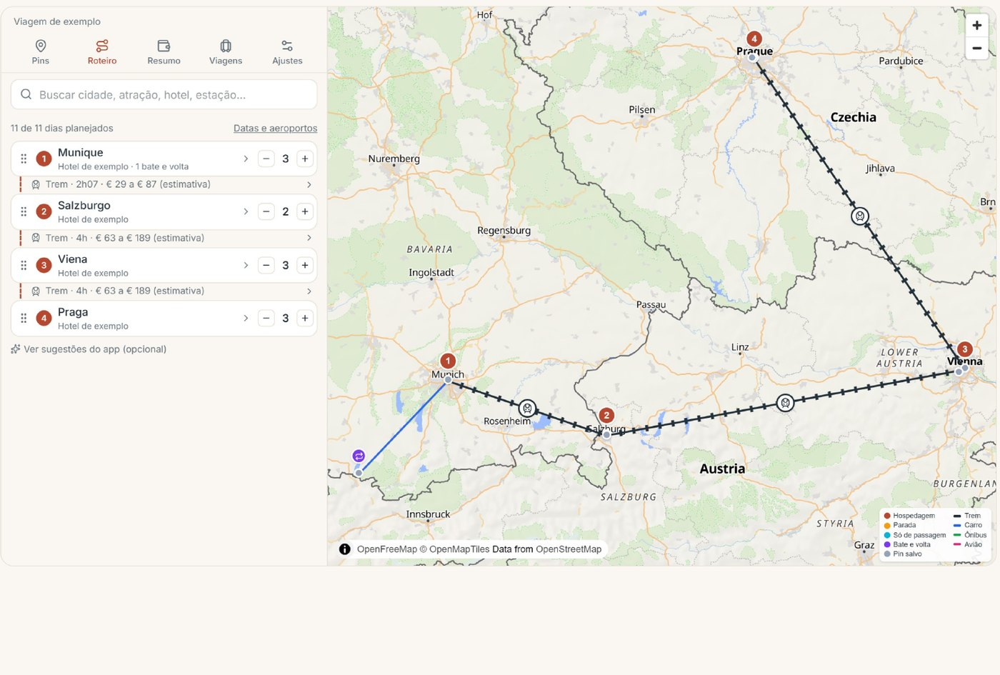
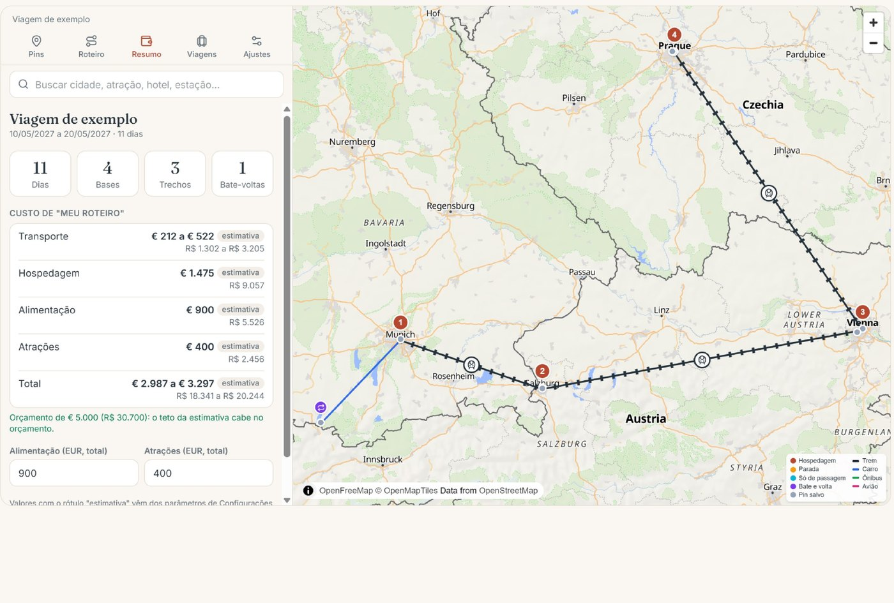
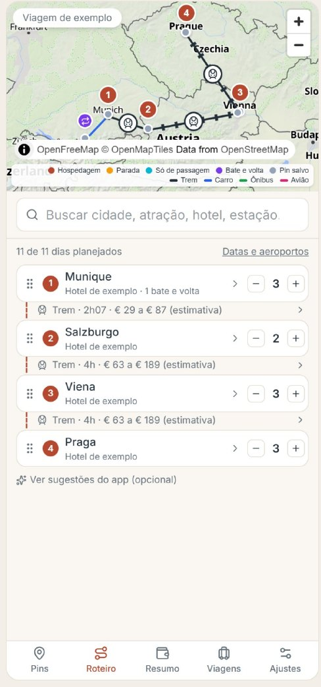

Sou estudante do 6º período de Ciência da Computação na UNIAN, em Niterói, com conclusão prevista para o fim de 2027, e curso a formação Especialista em IA pela Alura. Comecei a carreira em vendas no varejo e hoje trabalho na operação de uma agência de viagens premium, em um ambiente de padrão erro zero, onde participo da criação e da manutenção de agentes de IA e de automações.
Foi nessa rotina que aprendi a tratar um processo como sistema: cada etapa documentada, cada informação conferida na origem e nada assumido por conta própria. Os projetos deste portfólio nasceram de problemas reais do meu dia a dia, e em cada um procurei entender quem vai usar, resolver o que mais pesa e deixar claro o que já funciona e o que ainda está em teste.
Na trilha AI Builder do Gen AI, quero levar esse jeito de trabalhar para Operações e Logística e para Planejamento Estratégico, usando a IA como alavanca para construir soluções de ponta a ponta.

Neste projeto me desafiei a construir um assistente que vive no computador. Ele acorda com “oi Det”, conversa em português, controla o PC e ajuda nas tarefas do dia, sem custo além da assinatura do Claude que já existia. Aprendi a separar o que precisa de IA do que não precisa: comandos simples como volume, música e timers são resolvidos em menos de um segundo, sem gastar cota, e ações sensíveis como apagar arquivos ou enviar e-mail só acontecem depois de uma confirmação por voz.


O desafio deste projeto foi reunir em um só lugar tudo o que se sabe sobre cada fornecedor e ajudar a equipe a decidir quem contratar. A equipe continua trabalhando no ClickUp: o sistema lê as tarefas, grava cada contratação na ficha do fornecedor e soma gastos em uma só moeda. Na hora de contratar, a tela “Quem eu chamo?” compara experiência, nota, feedback e preço lado a lado. Aprendi sobre modelagem de dados, auditoria de alterações e controle de acesso por perfil.



Neste projeto me aventurei em um aplicativo web completo, que reúne o mapa, o roteiro e o custo de uma viagem em um só lugar, no computador e no celular. É possível pesquisar lugares, marcar prioridades, montar o roteiro arrastando as cidades e ver o tempo e o custo de cada trecho, em euro e em real. Aprendi a integrar vários serviços externos, a proteger chaves em um servidor intermediário e a sincronizar a mesma viagem em tempo real entre aparelhos.


